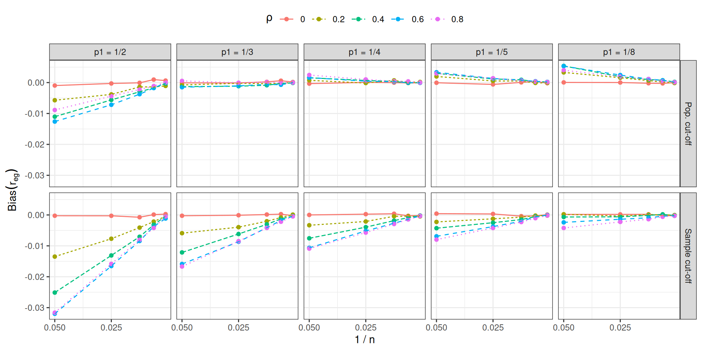
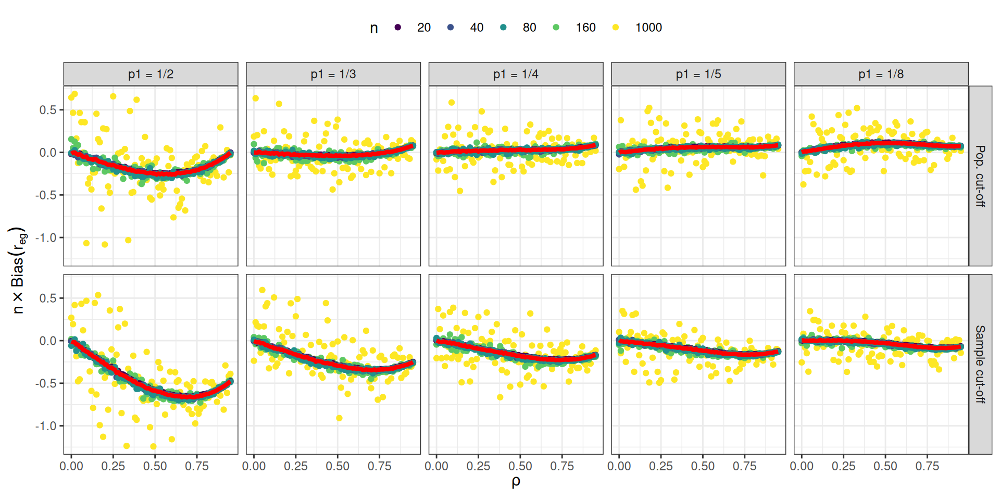
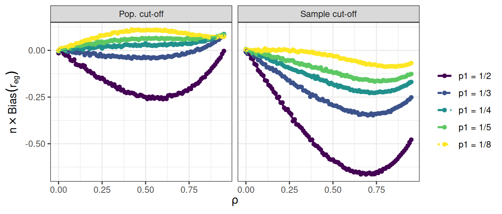
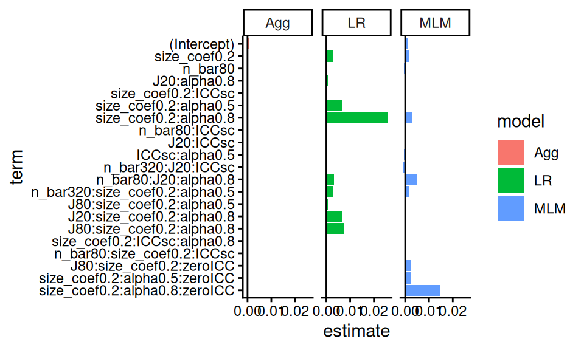
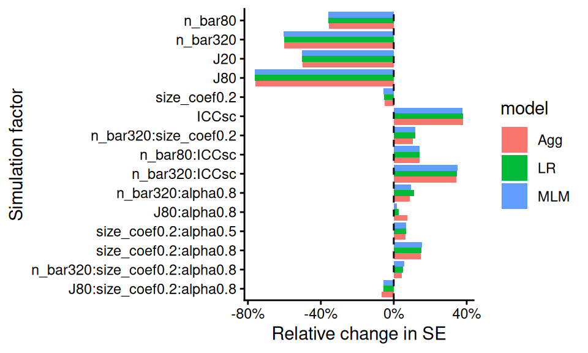
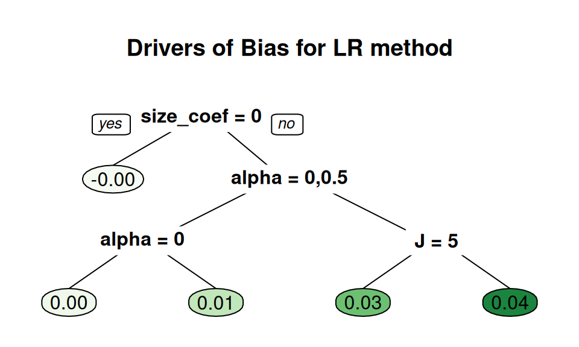
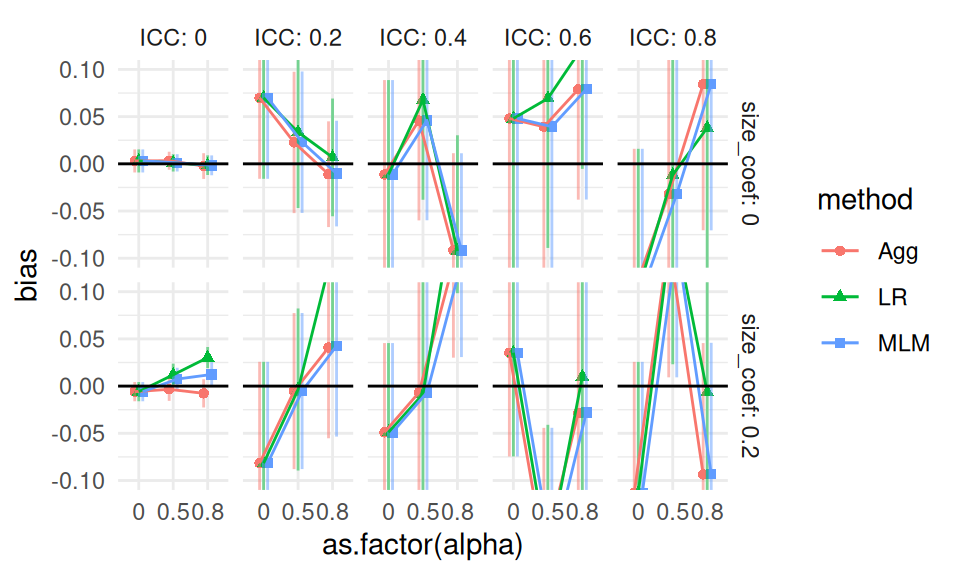
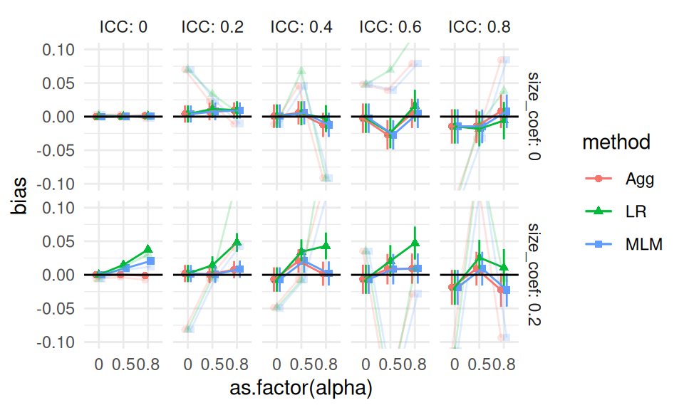
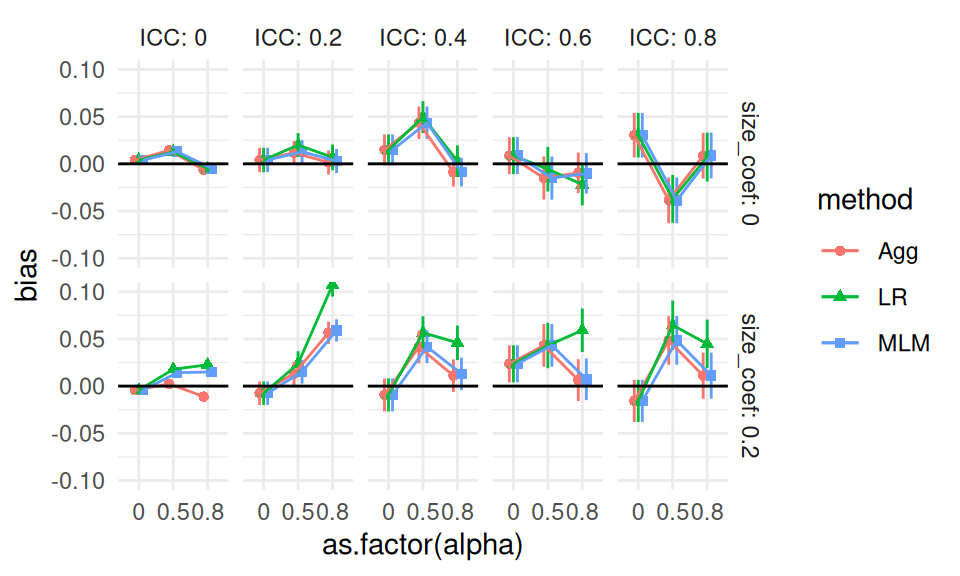

In this chapter we cover a few special topics on reporting simulation results. We first walk through some examples of how to do regression modeling, including using regression trees to identify what factor combinations are most important for explaining a set of results. We then dive more deeply into what to do when you have only a few iterations per scenario, and then we discuss what to do when you are evaluating methods that sometimes fail to converge or give an answer.
14.1 Using regression to analyze simulation results
Chapter 12 provided some examples of using regression and ANOVA on a set of simulation results to summarize overall patterns across scenarios. In this chapter we will provide some further in-depth examples along with the R code for doing this sort of thing.
14.1.1 Example 1: Biserial, revisited
As our first in depth example, we walk through the analysis that produces the final ANOVA summary table for the biserial correlation example in Chapter 12. In the visualization there, we saw that several factors impacted bias. The eta table presented later in that same chapter then decomposed the variance in performance across several factors so we could see which simulation factors mattered most for bias.
To build that table, we first fit a regression model, regressing bias on all the simulation factors. We first convert each factor to a factor variable, so that R does not assume a continuous relationship for numeric values.
The above printout gives main effects for each factor, averaged across the others. Because p1 and n are ordered factors, the lm() command automatically generates linear, quadratic, cubic and fourth order contrasts for them. We smooth our rho factor, which has many levels of a continuous measure, with a quadratic curve. We could instead use splines or some local linear regression if we were worried about model fit for a complex relationship.
The main effects are summaries of trends across contexts. For example, averaged across the other contexts, the “sample cutoff” condition is around 0.004 lower than the population (the baseline condition).
As shown in Chapter 12, we use ANOVA to get a sense of the major sources of variation in the simulation results (e.g., identifying which factors have negligible/minor influence on the bias of an estimator). To do this, we use aov() to fit an analysis of variance model:
anova_table <-aov(bias ~ rho * p1 * fixed * n, data = r_F)knitr::kable( summary(anova_table)[[1]],digits =c(0,4,4,1,5) )
Df
Sum Sq
Mean Sq
F value
Pr(>F)
rho
1
0.0024
0.0024
280.8
0.00000
p1
4
0.0236
0.0059
677.3
0.00000
fixed
1
0.0159
0.0159
1821.4
0.00000
n
1
0.0054
0.0054
625.8
0.00000
rho:p1
4
0.0017
0.0004
49.5
0.00000
rho:fixed
1
0.0034
0.0034
395.1
0.00000
p1:fixed
4
0.0017
0.0004
48.3
0.00000
rho:n
1
0.0007
0.0007
83.1
0.00000
p1:n
4
0.0073
0.0018
209.4
0.00000
fixed:n
1
0.0049
0.0049
561.4
0.00000
rho:p1:fixed
4
0.0005
0.0001
13.6
0.00000
rho:p1:n
4
0.0005
0.0001
14.8
0.00000
rho:fixed:n
1
0.0011
0.0011
122.4
0.00000
p1:fixed:n
4
0.0005
0.0001
15.1
0.00000
rho:p1:fixed:n
4
0.0002
0.0000
4.3
0.00167
Residuals
4760
0.0414
0.0000
NA
NA
The advantage here is the multiple levels of our categorical factors get bundled together in our table of results, making a tidier display. Note we are now including interactions between our simulation factors. The prior linear regression model was just estimating main effects of the factors, and not estimating these more complex relationships.
The eta table in Chapter 12 is a summary of this anova table, which we generate as follows:
library(lsr)etaSquared(anova_table) %>%as.data.frame() %>%rownames_to_column("source") %>%mutate( order =1+str_count(source, ":" ) ) %>%group_by( order ) %>%arrange( -eta.sq, .by_group =TRUE ) %>%relocate( order )
We group the results by the order of the interaction, so that we can see the main effects first, then two-way interactions, and so on. We then sort within each group to put the high importance factors first. The resulting variance decomposition table shows the amount of variation explained by each combination of factors.
14.1.2 Biserial correlations, revisited
In the biserial correlation example described in Section 12.2.3, we saw that bias can change notably across scenarios considered, and that several factors appear to be driving these changes. These factors also seem to have complex interactions: note how when p1 = 0.5, we get larger dips than when p1 = 1/8. Figure 12.5 gives a sense of the complex combination of factors that influence bias and also suggests some possibilities for further analysis. In particular, the figure suggests that the bias grows smaller as the sample size increases. Developing a model might let us draw more specific conclusions about how bias relates to sample size.

Figure 14.1: Bias of the biserial correlation estimate in an extreme groups design as a function of inverse sample size, cut-off thresholds, and cut-off types, for selected values of \(\rho\).
To get an initial sense of how bias relates to sample size, we created Figure 14.1, which follows a similar layout to Figure 12.5 but shows the inverse sample size on the horizontal axis of each plot, with different values of the correlation parameter corresponding to different colors and line types. For clarity, the plot shows only a small subset of the correlation levels in the full design. Figure 14.1 strongly suggests that the bias is inverse proportional to the sample size. If we let \(B_{pqrs}\) be the estimated bias for cut-off level \(p\), cut-off type \(q\), true correlation level \(r\), and sample size level \(s\) and let \(N_s\) be the actual value of sample size level \(s\), we posit that \[
B_{pqrs} = \beta_{pqr} \times \frac{1}{N_s} + e_{pqrs},
\] where \(e_{pqrs}\) is an error capturing the Monte Carlo uncertainty in the bias estimate. If this model is correct, it would allow us to simplify further analysis of the simulation results because it reduces the dimension of the design. Rather than dealing with the 5 distinct levels of the sample size factor, we can reduce it to a single-parameter relationship and focus the remaining analysis on how \(\beta_{pqr}\) varies across the remaining three factors in the design. Furthermore, thinking in terms of a formal model also allows us to test whether the posited relationship provides an adequate fit to the data.

Figure 14.2: \(N\) times the bias of the biserial correlation estimate in an extreme groups design as a function of \(\rho\), cut-off thresholds, and cut-off types.
Under the assumptions of the model, we can estimate \(\beta_{pqr}\) simply by calculating \(N_s \times B_{pqrs}\) and averaging across values of \(N_s\). Figure 14.2 plots \(N_s \times B_{pqrs}\), following the same layout as our original Figure 12.5. Individual points correspond to \(N_s \times B_{pqrs}\) for each unique scenario in the simulation; the yellow points are for \(N_s = 1000\), for which the Monte Carlo error is much larger than the other sample sizes. The red lines correspond to the estimated bias coefficients \(\beta_{pqr}\), calculated by taking weighted averages across sample sizes. It is apparent that the red lines capture the form of the bias quite well, which suggests that we can use our model coefficients for further analysis. For example, we could use ANOVA to understand the influence of the remaining factors on \(\beta_{pqr}\). We could also create a more succinct summary of the bias relationships by plotting \(\beta_{pqr}\) for varying cut-off values, cut-off types, and correlation parameters, as in Figure 14.3.

Figure 14.3: \(N\) times the bias of the biserial correlation estimate in an extreme groups design as a function of \(\rho\), cut-off thresholds, and cut-off types.
14.1.3 Example 2: Cluster RCT example, revisited
When we have several methods to compare, we can use meta-regression to understand how these methods change as other simulation factors change. We next illustrate this with our running Cluster RCT example.
We again turn our simulation levels (except for ICC, which has several levels) into factors, so R does not assume that sample size, for example, should be treated as continuous:
sres_f <- sres %>%mutate( across( c( n_bar, J, size_coef, alpha ), factor ),ICC =as.numeric(ICC) )# Run the regressionM <-lm( bias ~ (n_bar + J + size_coef + ICC + alpha) * method, data = sres_f )# View the resultstidy( M ) %>% knitr::kable( digits =3 )
term
estimate
std.error
statistic
p.value
(Intercept)
0.002
0.003
0.872
0.384
n_bar80
-0.003
0.002
-1.295
0.196
n_bar320
-0.001
0.002
-0.657
0.511
J20
-0.002
0.002
-0.991
0.322
J80
-0.002
0.002
-0.885
0.376
size_coef0.2
0.003
0.002
1.537
0.125
ICC
0.001
0.003
0.272
0.786
alpha0.5
-0.002
0.002
-1.179
0.239
alpha0.8
0.001
0.002
0.419
0.676
methodLR
-0.012
0.004
-3.060
0.002
methodMLM
0.001
0.004
0.191
0.849
n_bar80:methodLR
0.000
0.003
0.037
0.971
n_bar320:methodLR
0.000
0.003
-0.004
0.997
n_bar80:methodMLM
0.000
0.003
-0.170
0.865
n_bar320:methodMLM
-0.001
0.003
-0.362
0.718
J20:methodLR
0.005
0.003
1.722
0.085
J80:methodLR
0.006
0.003
1.946
0.052
J20:methodMLM
0.001
0.003
0.355
0.723
J80:methodMLM
0.001
0.003
0.420
0.675
size_coef0.2:methodLR
0.016
0.002
6.741
0.000
size_coef0.2:methodMLM
0.003
0.002
1.294
0.196
ICC:methodLR
0.000
0.004
-0.062
0.951
ICC:methodMLM
-0.006
0.004
-1.482
0.139
alpha0.5:methodLR
0.006
0.003
2.210
0.027
alpha0.8:methodLR
0.017
0.003
5.868
0.000
alpha0.5:methodMLM
0.001
0.003
0.434
0.664
alpha0.8:methodMLM
0.003
0.003
1.091
0.276
With even a modestly complex simulation, we can quickly generate a lot of regression coefficients, making our meta-regression somewhat hard to interpret. The above model does not even have interactions between the simulation factors, even though the plots we have seen strongly suggest interactions exist. That said, picking out the significant coefficients is a quick way to obtain clues as to what is driving performance. For instance, several features interact with the LR method for bias. The other two methods seem less impacted.
14.1.3.1 Using LASSO to simplify the model
We can simplify a meta regression model using LASSO regression, to drop coefficients that are less relevant. This requires some work to make our model matrix of dummy variables with all the interactions. If using LASSO, we recommend fitting a separate model to each method being considered; the set of fit LASSO models can then be compared to see which methods react to what factors, and how.
We first illustrate with LR, and then extend to all three. To use the LASSO we have to prepare our data first by hand—this involves converting all our factors to sets of dummy variables for the regression. We also generate all interaction terms up to the cubic level.
library(modelr)library(glmnet)sres_f_LR <- sres_f %>%filter( method =="LR" )# Create model matrixform <- bias ~ ( n_bar + J + size_coef + ICC + alpha )^3X <-model.matrix(form, data = sres_f_LR)[, -1]# The [,-1] drops the interceptdim(X)
[1] 270 71
# Fit LASSOfit <-cv.glmnet(X, sres_f_LR$bias, alpha =1)# Non-zero coefficientscoef(fit, s ="lambda.1se") %>%as.matrix() %>%as.data.frame() %>%rownames_to_column("term") %>%filter(abs(lambda.1se) >0) %>% knitr::kable(digits =3)
term
lambda.1se
(Intercept)
0.004
size_coef0.2
0.003
size_coef0.2:alpha0.8
0.022
Note we have 71 covariates due to the many, many interactions and the fact that our sample sizes, etc., are all factors, not continuous.
When using regression, and especially LASSO, which levels are baseline can impact the final results. We have our smallest sample sizes, no variation, 0 ICC, and no size_coef as baseline. We might imagine that other choices of baseline could suddenly make other factors appear with large coefficients. One trick to avoid selecting a baseline is to give dummy variables for all the factors, and fit LASSO with the colinear terms. Due to regularization, this would still work; we do not pursue this here, however.
We next bundle the above to make three models, one for each method. We first rescale ICC to be on a 5 point scale to control it’s relative coefficient size to the dummy variables, and then add a new feature of “zeroICC” as well (recalling the prior plots that showed ICC being 0 was unusual).
Of course, this is table is hard to read. Better to instead plot the coefficients:
lvl = m_res$termm_resL <- m_res %>%pivot_longer( -c( order, term ), names_to ="model", values_to ="estimate" ) %>%mutate( term =factor(term, levels =rev(lvl) ) )ggplot( m_resL,aes( x = term, y = estimate, fill = model, group = model ) ) +facet_wrap( ~ model ) +geom_bar( stat ="identity", position ="dodge" ) +geom_hline(yintercept =0 ) +coord_flip()

Here we see how both LR and MLM stand out, but for different simulation factor combinations (see, e.g., the interaction of zeroICC, alpha being 0.8, and size_coef being 0.2). Our coefficient plot provides some understanding of how the methods are similar, and dissimilar.
For another example we turn to the standard error. Here we regress \(log(SE)\) onto the coefficients. We then exponentiate the estimated coefficients to get the relative change in SE as a function of the factors. We can interpret an exponentiated coefficient of, for example, 0.64 for MLM for n_bar80 as a 36% reduction of the standard error when we increase n_bar from the baseline of 20 to 80. We use ordinary least squares and include all interactions up to three way interactions. We will then simply drop all the tiny coefficients, rather than use the full LASSO machinery, to simplify our output. This results in a plot similar to the above:

Our plot clearly shows that the three methods are basically the same in terms of uncertainty estimation, with a some differences when alpha is 0.8. We also see some interesting trends, such as the impact of n_bar declines when ICC is higher (see the positive interaction terms at right of plot).
14.2 Using regression trees to find important factors
With more complex experiments, where the various factors are interacting with each other in strange ways, it can be a bit tricky to decipher which factors are important and what patterns are stable. Another exploration approach we can use are regression trees.
We wrote a utility method, a wrapper to the rpart package, to do this (script here). Fitting a tree that regresses our performance onto the factors will show us which factors are most related to performance. Here, for example, we see what predicts larger bias amounts in our cluster RCT running example:
This tree gives a very straightforward story: if size_coef is not 0 and we are using LR, then alpha drives bias.
Note that the default pruning for a tree is based on a cross-fitting evaluation, but as our sample size is not too terribly high (just the number of simulation scenarios fit), cross-fitting is quite unstable. Rerunning the code with a different seed will generally give a different tree. To control stability, we find that it is often worth forcibly controlling the size of the tree. As trees are built greedily, forcibly trimming often leaves you only with the big things. As we are using these trees as exploratory tools describing our simulation results, we do not need to worry about whether it is truly the best fit; we are creating visualizations, not doing formal testing.
We can also zero in on specific methods to understand how they engage with the simulation factors, by fitting a tree to just that method’s results, as so:
create_analysis_tree( filter( sres_f, method=="LR" ),outcome ="bias",min_leaves =5,predictor_vars =c("n_bar", "J","size_coef", "ICC", "alpha"),tree_title ="Drivers of Bias for LR method" )

Here we force more leaves to get at some more nuance. We again immediately see, for the LR method, that bias is large when we have non-zero size coefficient and a large alpha value. We also see that \(J\) may have some additional effect.
Generally we would not use trees like this for a final reporting of results, but they can be important tools for understanding your results, which leads to how to make and select more conventional figures for an outward facing document.
14.3 Analyzing results with few iterations per scenario
When each simulation iteration is expensive to run (e.g., if fitting your model takes several minutes), then running thousands of iterations for many scenarios may not be computationally feasible. But running simulations with only a small number of iterations will yield very noisy estimates of estimator performance for that scenario.
Now, if the methods being evaluated are substantially different, then differences in performance might still be evident even with only a few iterations. More generally, however, the Monte Carlo Standard Errors (MCSEs) may be so large that you will have a hard time discriminating between systematic patterns and noise.
One tool to handle few iterations is aggregation: if you average across scenarios, those averages will have more precise estimates of (average) performance than the estimates of performance within the scenarios. Do not, by contrast, trust the bundling/boxplot approach–the MCSEs will make your boxes wider, and give the impression that there is more variation across scenarios than there really is.
Meta regression approaches such as we saw above can also be useful: a regression effectively averages performance across scenario, and give summaries of overall trends. You can even fit random effects regression, specifically accounting for the noise in the scenario-specific performance measures. For more on using random effects for your meta regression see Gilbert and Miratrix (2024).
14.3.1 Example: ClusterRCT with only 25 replicates per scenario
Previously, we have analyzed the results of our cluster RCT simulation with 1000 iterations per scenario. But say we only had 25 iterations per scenario. Using the prior chapter as a guide, we next recreate some of the plots to show how MCSE can distort the picture of what is going on, and how averaging can mitigate this somewhat.
We start again with bias, and generate a single plot of the raw results for a subset of our scenarios, along with error bars from the MCSEs.

Other than the ICC = 0 case, we see substantial amounts of uncertainty, making it very hard to tell the different estimators apart. (Our uncertainty is much less when ICC is 0 because our estimators are far more precise due to not having cluster variation to contend with.) In the top row, second plot from left, we also see that the three estimators are co-dependent: they all react similarly to the same datasets. In other words, the point estimates are correlated: if a dataset happens to have high-outcome units in the treated group, all the estimators will give larger estimates of an average effect. The seeming trend we are seeing is not systematic bias, but rather shared random variation.
Here is the same plot with the full 1000 replicates, with the 25 replicate results overlaid in light color for comparison:

With 1000 iterations, MCSEs are around \(1/\sqrt{40} = 16\%\) the size, as we would expect (generally MCSEs are on the order of \(1/\sqrt{R}\), where \(R\) is the number of replicates, so to halve a MCSE you need to quadruple the number of replicates). Also note the ICC=0.2 top facet has shifted to a flat, slightly elevated line: we do not yet know if the elevation is real, just as we did not know if the dip in the prior plot was real, but we do know that whatever might be happening is of a much smaller scale than suggested by the prior plot. Our confidence intervals mostly all still include 0: it is possible there is no bias at all when the size coefficient is 0 (in fact we are fairly sure this is indeed the case).
Moving back to our “small replicates” simulation, we can use aggregation to smooth out some of our uncertainty. For example, if we aggregate across 9 scenarios, our number of replicates goes from 25 to 225 and our MCSEs should be about a third the size. To calculate an aggregated MCSE, aggregate the scenario-specific MCSEs as follows: \[ MCSE_{agg} = \sqrt{ \frac{1}{K^2} \sum_{k=1}^{K} MCSE_k^2 } \]
where \(MCSE_k\) is the Monte Carlo Standard Error for scenario \(k\), and \(K\) is the number of scenarios being averaged. Assuming a collection of estimates are independent, the overall \(SE^2\) of an average is the average \(SE^2\) divided by \(K\).
In code we have:
Recall that the SE variable is simply the standard deviation of the estimates.
We can then make our aggregated bias plot, aggregating across n_bar and J:

Even with the additional replicates per point, we see noticeable noise in our plot: look at the top-right ICC of 0.8 facet, for example. Also note how our three methods continue to track each other up and down in the top row, due to shared error. This shared error can be deceptive. It can also be a boon: if we are explicitly comparing the performance of one method vs another, we can subtract out the shared error, similar to what happens in a blocked experiment (Gilbert and Miratrix 2024). We discuss this approach next.
14.4 Multilevel Meta Regressions
One way to get a more precise head to head comparison of the estimators is to fit a multilevel regression model to our raw simulation results with a random effect for dataset. This can be especially useful as a tool for analyzing results with few iterations.
We continue the running example of the prior section and fit such a model, taking advantage of the fact that estimated bias is simply the average of the error across replicates. We first make a unique ID for each scenario and dataset, and then fit the model with a random effect for both. The first random effect allows for specific scenarios to have more or less bias beyond what our model predicts. The second random effect allows for a given dataset to have a larger or smaller error than expected, shared across the three estimators.
The random variation for simID captures unexplained variation due to the interactions of the simulation factors. Relative to the dataset variation, it seems to be a trivial amount. This makes sense: each datasets is unbalanced due to random assignment, and that estimation error, shared across all three estimators, is part of the dataset random effect.
So far we have not included any simulation factors: we are pushing variation across simulation into the random effect terms. We can instead include the simulation factors as fixed effects, to see how they impact bias.
We then extract the fixed effects and sort by \(p\)-value to see which factors are most important for bias. We adjust our \(p\)-values with a simple Benjamini-Hochberg false discovery rate correction to try and cut down the number of terms to those that are most likely to be real, and not just noise.
We see what we have seen before: the LR method is notably biased when size_coef is non-zero and alpha is high. We have estimated how bias varies with method and simulation factor, while accounting for the uncertainty in the simulation.
Finally, we can see how much variation has been explained by the simulation factors by comparing the random effect variances:
The var.red column is how much variation is explained by our model of similation factors. Our model is explaining an estimated 16% of the variation across simulation scenarios. This implies that there is a lot of variation due to interactions between the simulation factors that are not in our model.
14.5 What to do with warnings in simulations
Sometimes our analytic strategy might give some sort of warning (or fail altogether). In Section 7.4 we saw how to trap such warnings or errors. In particular, in Section 7.4.1 we illustrated error trapping on the multilevel model for the cluster RCT experiment by revising our analysis_MLM() method to an analysis_MLM_safe() method, which gave output from the MLM method that looked like this:
set.seed(101012) # (I picked this to show an issue.)dat <-gen_cluster_RCT( J =50, n_bar =100, sigma2_u =0 )analysis_MLM_safe( dat )
For this dataset, a convergence issue that gave rise to the indicated message and warning.
Once the full simulation is run, we can examine the patterns of these warnings and errors to see if they are a serious or minor problem. We first do this by calculating the rate of errors or warning messages as a performance measure in its own right. Especially if we plan on possibly dropping some trials, it is important to see how often our estimators are acting peculiarly.
For example, in our cluster RCT running example, we know that ICC is an important driver of when convergence issues might occur, so we can explore how often we get a convergence message by ICC level by calculating percent change of a message, warning, or error:
We see that when the ICC is 0 we get a lot of convergence issues (nearly half of our runs have a message), but as soon as we pull away from 0 it drops off considerably. Thankfully, we never saw actual errors and our warnings were very rare.
At this point we have to decide whether to drop the problematic runs or keep them. Ideally, failure would not be too common, meaning we could drop or keep the problematic iterations without really impacting our overall results.
In our case, for example, it should not matter much, except possibly when ICC = 0, and we know the convergence issues are driven by trying to estimate a 0 variance, and thus is in some sense expected. Furthermore, we know people using these methods would likely ignore these messages, and thus we are faithfully capturing how these methods would be used in practice. We might eventually, however, want to do a separate analysis of the ICC = 0 context to see if the MLM approach is actually falling apart, or if it is just throwing warnings.
Importantly, if the decision is to drop, then the entire simulation iteration, including the other estimators, should be dropped even if the other estimators worked fine! If there is something particularly unusual about the dataset that caused the concern, then dropping for one estimator and keeping for the others would be unfair: in the final performance measures the estimators that did not give a warning could be being held to a higher standard, making the comparisons between estimators biased. Consider, for example, if the dropped datasets were fundamentally harder to evaluate.
14.6 Conclusions
Designed experiments in simulation are only as useful as the summaries you make of their output. In this chapter, we showed a few advanced ways of moving from raw simulation outputs to interpretable summaries using regression, ANOVA, LASSO, trees, and multilevel meta-models. These tools let you parse the main effects of your simulation factors along with their interactions, and can help turn many scenario-level estimates into clear statements about where methods work and where they break. They can also help protect against how Monte Carlo simulation error can potentially distort findings.
We also focused on two specific areas where analyzing a set of results can be tricky: when each iteration is expensive (so you do not have too many of them), and when sometimes your estimators fail or perform poorly in a way that raises warnings or flags. In the former case, aggregation and multilevel models can be especially useful when replicates are expensive. In the latter, evaluate when failures occur, and then either drop them consistently or explicitly model them.
Overall, these tools give a way to go deeper into a set of simulation results. Often the findings generated by these tools would not be presented in the main text, but they can be important supporting detail, especially when placed in a supplement.
Gilbert, Joshua, and Luke Miratrix. 2024. “Multilevel Metamodels: A Novel Approach to Enhance Efficiency and Generalizability in Monte Carlo Simulation Studies.”arXiv Preprint arXiv:2401.07294.